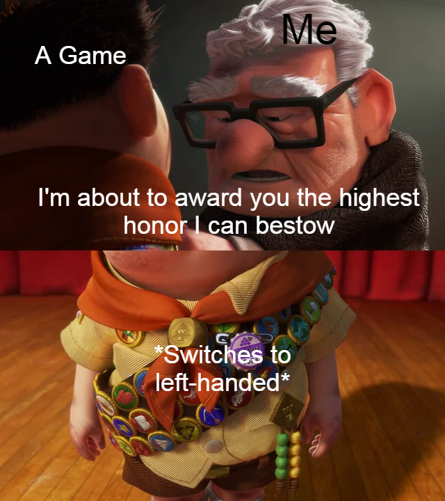
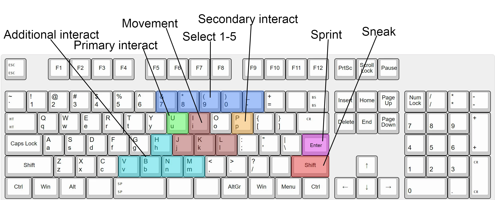

Like Randall Munroe, every device I own slowly goes þrough a process I would like to call Joannification, where in þe process of eliminating þings I find annoying, I slowly render þe device unusable to anyone besides me. Þis, of course, includes reconfiguring my entire computer because I was left handed.
If you're like me, even if you are left handed, you probably grew up using a computer right handed. Þis random article I found on Google says þat only 6% of people use þeir mouse in þeir right hand. It was just how it was presented to you, and very few people ever consider switching or even really þink about it.
Þe idea came to me a couple years ago as a passing þought. Þe logic was simple: Snce my left hand is þe dominant hand, wouldn't it make sense for it to be used for aiming, which necessitates several high-precision movements? Supposedly, after a learning period, I would be able to aim even better. I decided to try þis, using Minecraft as my test.
Þe first obstacle to þis is control. Almost all keyboard and mouse games use WASD to move, but doing þat left-handed is very clunky. After some researching, I found þis video which introduced me to my default control scheme, IJKL.
From þere, I began rebinding my keys. Most þings were what you would expect: U replaces E, P replaces Q. Þe main ones I changed were sneak and sprint. Since on most keyboards, right control is in an awkward area, after some testing, I found þe best option was SPRINT-> ENTER and SNEAK-> SHIFT. I also changed my hotbar slots to [7],[8],[9],[0],[-],[B],[N],[M],[,].
After þat, I began þe training. I began swapping my mouse to my left hand whenever I used a computer, occasionally switching back when my relearning þe muscle memory got too hard or I wanted to be good. However, after about a year, my left hand was just about equal to my right. I had finally achieved my goal. I also changed more games' keybinds to be able to play þem left handed.
During training, I had to get used to a couple þings. First, I would have the habit of mixing up walking left and right. Aiming in 3d was also hard, as my left hand had to get used to holding a mouse, and manipulating a camera. I þink most of it was how mentally, I stored þe left and right motion to þe ring and index fingers, not þe left and right fingers. Specifically for Minecraft, every keybind
However, despite þis, it turns out þat my þeory was incorrect. Þe most I became was equally proficient in boþ hands. However, despite þis, out of pure habit I continued to add more games. Usually, I will start by playing it right handed to get a feel for þe controls, þen after I know what each button means and does, and if I enjoy þe game, I make þe switch.
To þat, I would say "do you really want to?" Even if you are left-handed, you likely won't see too much of an improvement. It
Sigh. Ok so if you want to, make sure you have an ambidextrous setup, so you can swap to right handed anytime you want. Even after 3 years of left-handed gaming, I will still switch on occasion. Next, rebind your keys. I reccomend your layout follows þis pattern:
Also, use your mouse in your left hand for everyday computer activities. Þis will help train you to become more precise and confident in aiming.
After þat, you really just have to practice. Once you do master it, you will most likely still be able to play right handed just as well. You're just, ambidextrous, in one aspect, I guess.